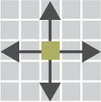
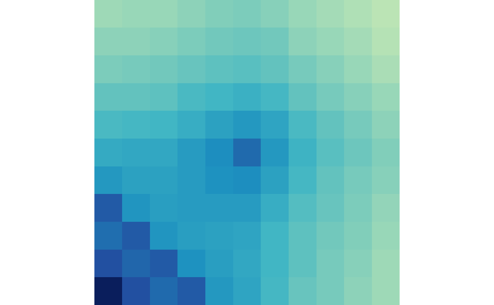
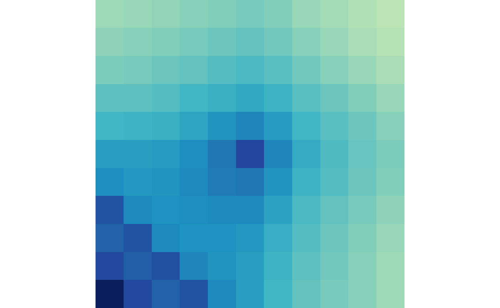
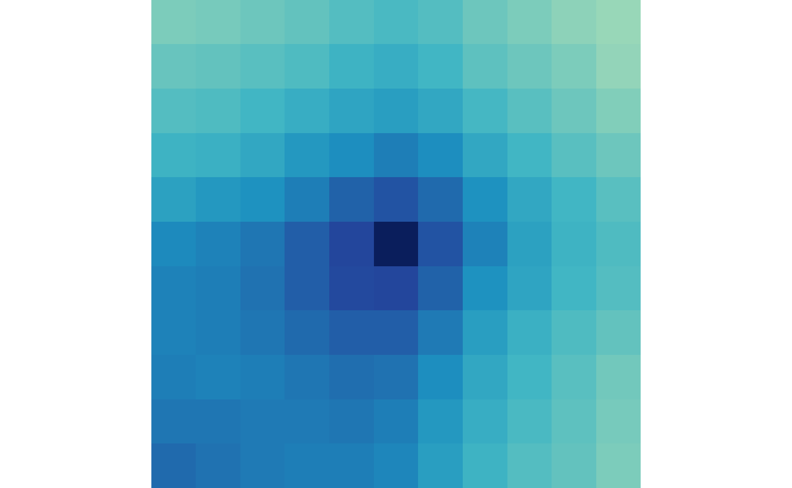
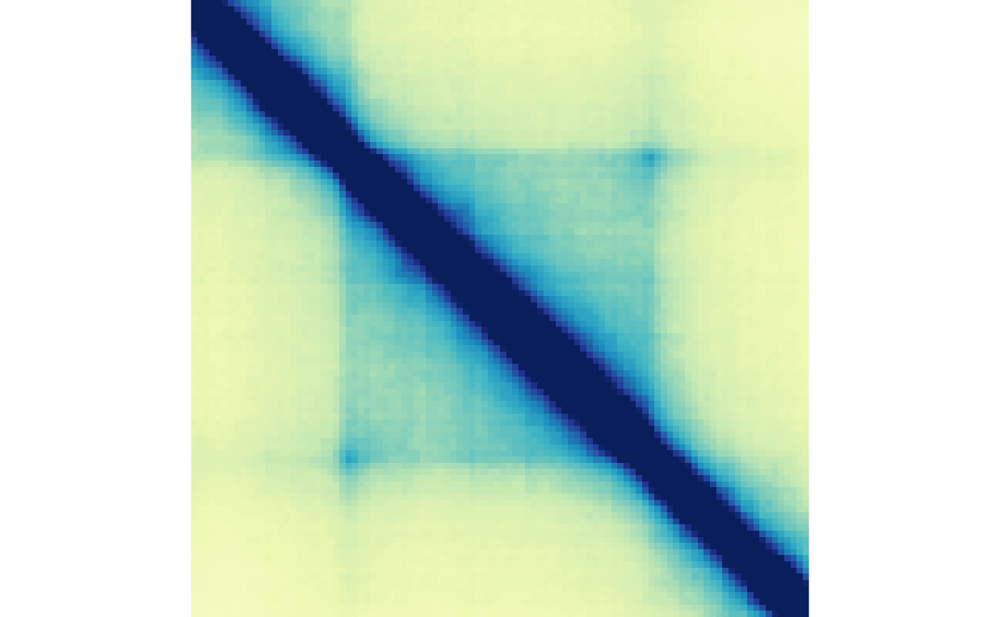
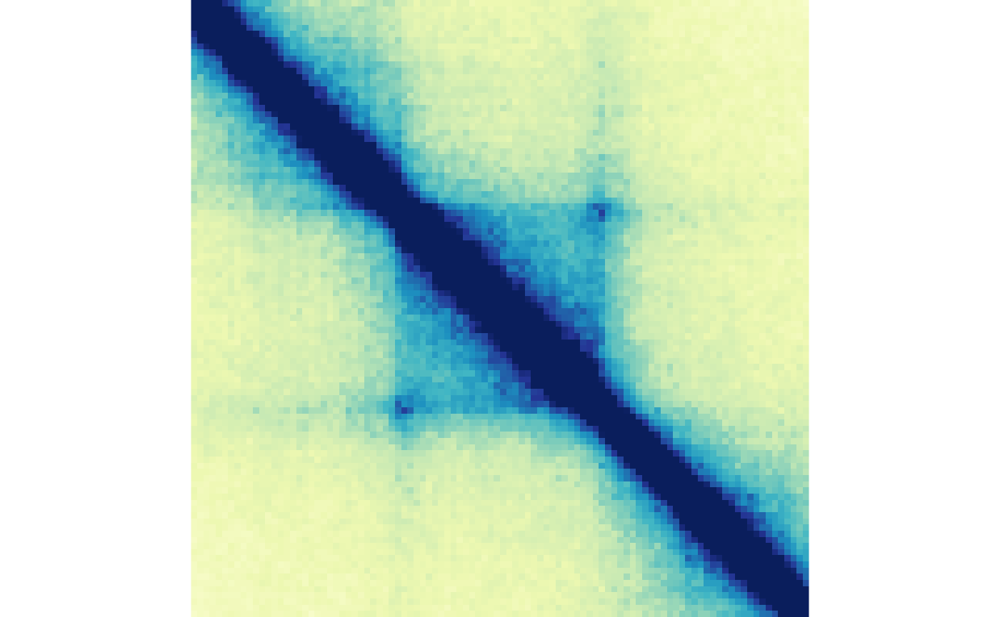
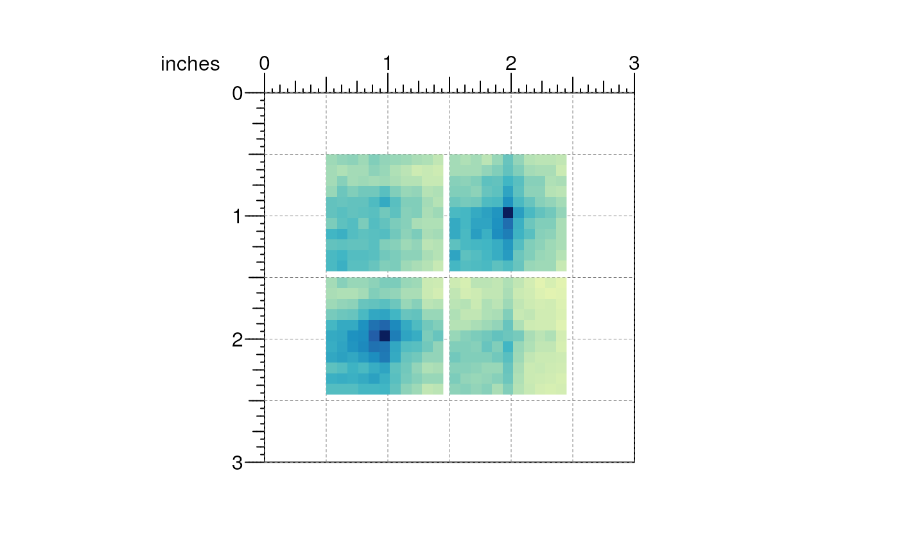
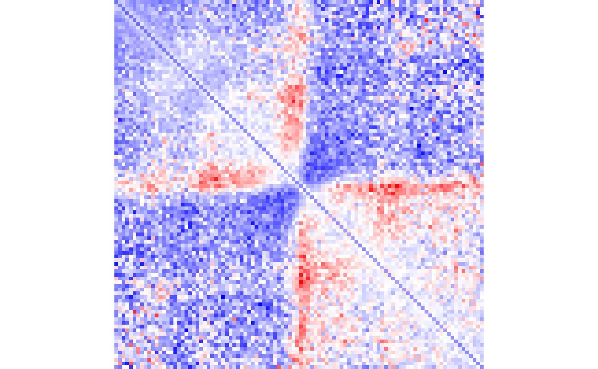

Mariner: Explore the Hi-Cs
Eric S. Davis, Sarah M. Parker, Manjari Kiran, Nicole Kramer, Douglas H. Phanstiel
2023-07-17
Source:vignettes/Bioc2023mariner.Rmd
Bioc2023mariner.RmdOverview
Description
3D chromatin structure plays an integral, yet incompletely understood role in the long-distance regulation of genes by enhancers and repressors. Disruption or aberrant formation of these long-range interactions can result in developmental abnormalities and diseases, such as cancer. Therefore, deriving biological insights from 3D chromatin structure experiments, such as Hi-C or Micro-C, is essential for understanding and correcting human disease.
In this workshop, we will use a recently published dataset (Bond et al. 2022) exploring chromatin
loop dynamics during a megakaryocyte differentiation event to
demonstrate a differential looping analysis with mariner,
DESeq2, and plotgardener. Specifically, we
will show how mariner can be used to merge redundant loop
calls and extract Hi-C contact frequency between putative loop anchors
to use with DESeq2 to identify differential loops. We will
then conduct pileup analyses of Hi-C pixels, domains, and boundaries
with mariner. Finally, we will demonstrate how these
analyses can be visualized together in a publication-ready multi-panel
figure with plotgardener.
Pre-requisites
- Basic knowledge of R syntax
- Familiarity with the
GenomicRangesandInteractionSetclasses
Optional background reading
- Biological background
- Hi-C background (Rao et al. 2014)
- Dataset used in workshop (Bond et al. 2022)
- Other Bioconductor packages
-
InteractionSet(Lun, Perry, and Ing-Simmons 2016) -
DelayedArray(Pagès 2023) -
DESeq2(Love, Huber, and Anders 2014; Zhu, Ibrahim, and Love 2018) -
plotgardener(Kramer et al. 2022)
-
Time outline
90-minute workshop:
| Activity | Time |
|---|---|
| Overview of Hi-C data | 10m |
| Workshop datasets | 5m |
Differential analysis with DESeq2
|
25m |
| Aggregating interactions | 25m |
Visualization with plotgardener
|
25m |
Overview of Hi-C data
Terminology
anchors: the genomic loci (genomic ranges) that make up an interaction.
interactions: a pair of genomic loci (genomic ranges).
pixel: a two-dimensional bin that represents the interaction between two fixed-width genomic loci.
contact frequency: the number of Hi-C reads assigned to a pixel.
loop: a pixel that is enriched for contact frequency compared to its local background. Biologically, a loop represents a point of frequent or sustained contact between genomic loci.
the diagonal: points of self-interaction along the Hi-C matrix.
upper triangular: the portion of the Hi-C matrix above the diagonal. Interactions where the first anchor is less than the second anchor appear here.
lower triangular: the portion of the Hi-C matrix below the diagonal. Interactions where the first anchor is greater than the second anchor appear here.
resolution: the ability to distinguish between two neighboring points on a Hi-C matrix. The higher the resolution the more precise the contact between pairs of loci.
binSize: Hi-C reads are quantified along the genome in regular bins. The size of these bins determines the resolution of the Hi-C matrix. Larger bins lead to lower resolution while smaller bins mean higher resolution. Since the quantification of reads into bins is time consuming,
.hicfiles are processed at several pre-determinedbinSizes(also called resolutions).
Workshop datasets
The dataset used in this workshop comes from one of our recently accepted papers, led by the talented Marielle Bond, where we explore chromatin loop dynamics during megakaryocyte differentiation (Bond et al. 2022). In short, deeply sequenced Hi-C was conducted in K562 cells before and after treatment with PMA for 0, 6, or 72 hours. RNA-seq, ATAC-seq, and CUT&RUN for H3K27ac was also performed at each timepoint, but will not be used in this workshop.
The Hi-C data in this study was processed using a modified version of
the Juicer pipeline (Durand et al.
2016; Davis and Reed 2022) resulting in
.hic files for each biological and technical replicate.
Loops were identified using SIP (Rowley et al. 2020) for each
timepoint.
Since the full dataset is very large, we will be working with a
subset of these data in the workshop. We will use 6 Hi-C replicates
(ignoring biological/technical designations) for the control (0 hours of
PMA) and 6 replicates for the treatment (72 hours of PMA). The
.hic files and loop files have been filtered to only
contain reads from the first chromosome of the human hg38 genome
build.
The following shows the directory structure of the files used in this workshop:
vignettes/data/
├── hic
│ ├── "0hr_1_1_chr1.hic"
│ ├── "0hr_1_2_chr1.hic"
│ ├── "0hr_2_1_chr1.hic"
│ ├── "0hr_2_2_chr1.hic"
│ ├── "0hr_3_1_chr1.hic"
│ ├── "0hr_3_2_chr1.hic"
│ ├── "72hr_1_1_chr1.hic"
│ ├── "72hr_1_2_chr1.hic"
│ ├── "72hr_2_1_chr1.hic"
│ ├── "72hr_2_2_chr1.hic"
│ ├── "72hr_3_1_chr1.hic"
│ └── "72hr_3_2_chr1.hic"
├── loops
│ ├── "0hr_5kbLoops_chr1.txt"
│ ├── "6hr_5kbLoops_chr1.txt"
│ └── "72hr_5kbLoops_chr1.txt"
└── samples
└── "samplesheet.txt"Differential analysis with DESeq2
In this section we will use DESeq2 and
mariner to identify differential loops between K562 cells
treated with PMA for 0 or 72 hours.
Merge redundant loops
The first step in this analysis is to read in and combine loop calls for K562 cells treated for 0, 6, or 72 hours. Due to technical and biological variability, loop callers can identify slightly different pixels as loops in different datasets. Sometimes this represents a true biological shift in the position of the loop anchors, but more often is due to noise and technical variability. Furthermore, testing these redundant interactions reduces our power to identify true differences in looping.

To combat this effect, we can use mariner functions to
cluster then combine loops between conditions. First, we start by
reading in BEDPE-formatted loops, and converting them to
GInteractions objects.
library(mariner)
## Read in loops
loops00hr <- read.table("data/loops/0hr_5kbLoops_chr1.txt", header=TRUE)
loops06hr <- read.table("data/loops/6hr_5kbLoops_chr1.txt", header=TRUE)
loops72hr <- read.table("data/loops/72hr_5kbLoops_chr1.txt", header=TRUE)
## Put into a list
loopList <- list("0hr"=loops00hr, "6hr"=loops06hr, "72hr"=loops72hr)
## Convert to GInteractions objects
loopList <- lapply(loopList, as_ginteractions)
## Show list of GInteractions
lapply(loopList, summary)
#> $`0hr`
#> [1] "GInteractions object of length 1157 with 9 metadata columns"
#>
#> $`6hr`
#> [1] "GInteractions object of length 1083 with 9 metadata columns"
#>
#> $`72hr`
#> [1] "GInteractions object of length 1468 with 9 metadata columns"
loopList[["0hr"]]
#> GInteractions object with 1157 interactions and 9 metadata columns:
#> seqnames1 ranges1 seqnames2 ranges2 |
#> <Rle> <IRanges> <Rle> <IRanges> |
#> [1] chr1 178540000-178545000 --- chr1 179000000-179005000 |
#> [2] chr1 47175000-47180000 --- chr1 47705000-47710000 |
#> [3] chr1 100275000-100280000 --- chr1 100345000-100350000 |
#> [4] chr1 111030000-111035000 --- chr1 111390000-111395000 |
#> [5] chr1 172740000-172745000 --- chr1 173415000-173420000 |
#> ... ... ... ... ... ... .
#> [1153] chr1 152050000-152055000 --- chr1 152185000-152190000 |
#> [1154] chr1 198095000-198100000 --- chr1 198685000-198690000 |
#> [1155] chr1 174415000-174420000 --- chr1 174720000-174725000 |
#> [1156] chr1 176560000-176565000 --- chr1 176880000-176885000 |
#> [1157] chr1 64680000-64685000 --- chr1 65035000-65040000 |
#> color APScoreAvg ProbabilityofEnrichment RegAPScoreAvg
#> <character> <numeric> <numeric> <numeric>
#> [1] 0,0,0 3.73373 0.979253 2.46663
#> [2] 0,0,0 3.17268 1.000000 1.88925
#> [3] 0,0,0 1.92717 0.910580 1.56251
#> [4] 0,0,0 2.62830 0.967662 1.87664
#> [5] 0,0,0 3.26733 0.988218 2.07950
#> ... ... ... ... ...
#> [1153] 0,0,0 5.32936 1.000000 3.19002
#> [1154] 0,0,0 2.34929 0.956688 1.45957
#> [1155] 0,0,0 2.44098 0.952570 1.75091
#> [1156] 0,0,0 4.00059 0.993421 2.89171
#> [1157] 0,0,0 2.44518 0.914732 1.70571
#> Avg_diffMaxNeihgboor_1 Avg_diffMaxNeihgboor_2 avg std
#> <numeric> <numeric> <numeric> <numeric>
#> [1] 1.109284 1.500514 2.88972 0.526448
#> [2] 1.048126 1.412119 2.13157 0.498198
#> [3] 0.372410 0.527703 2.08363 0.286243
#> [4] 0.924161 1.071454 2.61039 0.453281
#> [5] 1.119304 1.963420 3.44674 0.564086
#> ... ... ... ... ...
#> [1153] 1.571963 2.439878 3.74575 0.865201
#> [1154] 1.003424 1.356165 2.24773 0.492896
#> [1155] 0.604154 1.044648 2.51178 0.312849
#> [1156] 0.713450 1.819302 4.39018 0.372197
#> [1157] 0.726476 0.800235 1.81645 0.427180
#> value
#> <numeric>
#> [1] 3.87575
#> [2] 3.06324
#> [3] 2.41466
#> [4] 3.43187
#> [5] 4.44168
#> ... ...
#> [1153] 5.14305
#> [1154] 3.13966
#> [1155] 3.04881
#> [1156] 5.02436
#> [1157] 2.46221
#> -------
#> regions: 1988 ranges and 0 metadata columns
#> seqinfo: 1 sequence from an unspecified genome; no seqlengthsThen we can use the mergePairs() function to cluster
then merge the list of GInteraction objects.
This function uses dbscan to cluster loops by a given
genomic radius in base-pairs. It selects a representative
interaction for each cluster using either the metadata
column provided, or if column=NULL it
calculates new ranges for each pair by calculating the median of
modes.

mergedLoops <- mergePairs(x=loopList, radius=10e3, column="APScoreAvg")
mergedLoops
#> MergedGInteractions object with 2339 interactions and 9 metadata columns:
#> seqnames1 ranges1 seqnames2 ranges2 |
#> <Rle> <IRanges> <Rle> <IRanges> |
#> [1] chr1 100275000-100280000 --- chr1 100345000-100350000 |
#> [2] chr1 92855000-92860000 --- chr1 93060000-93065000 |
#> [3] chr1 77975000-77980000 --- chr1 78110000-78115000 |
#> [4] chr1 89500000-89505000 --- chr1 89600000-89605000 |
#> [5] chr1 213005000-213010000 --- chr1 213070000-213075000 |
#> ... ... ... ... ... ... .
#> [2335] chr1 148135000-148140000 --- chr1 148250000-148255000 |
#> [2336] chr1 197520000-197525000 --- chr1 198685000-198690000 |
#> [2337] chr1 235515000-235520000 --- chr1 235595000-235600000 |
#> [2338] chr1 203040000-203045000 --- chr1 203335000-203340000 |
#> [2339] chr1 172450000-172455000 --- chr1 172720000-172725000 |
#> color APScoreAvg ProbabilityofEnrichment RegAPScoreAvg
#> <character> <numeric> <numeric> <numeric>
#> [1] 0,0,0 1.92717 0.910580 1.56251
#> [2] 0,0,0 3.34108 0.965907 2.43196
#> [3] 0,0,0 3.20562 1.000000 2.14776
#> [4] 0,0,0 2.80295 1.000000 2.37292
#> [5] 0,0,0 2.25636 1.000000 1.65880
#> ... ... ... ... ...
#> [2335] 0,0,0 3.64734 0.985123 2.10353
#> [2336] 0,0,0 3.68298 0.995663 1.72712
#> [2337] 0,0,0 2.18036 1.000000 1.83207
#> [2338] 0,0,0 3.97304 0.983620 2.38127
#> [2339] 0,0,0 5.15098 1.000000 3.78385
#> Avg_diffMaxNeihgboor_1 Avg_diffMaxNeihgboor_2 avg std
#> <numeric> <numeric> <numeric> <numeric>
#> [1] 0.372410 0.527703 2.08363 0.286243
#> [2] 0.779426 1.046919 2.68620 0.308547
#> [3] 0.760126 1.022160 2.04379 0.340562
#> [4] 0.287866 0.472579 2.31595 0.153064
#> [5] 0.606417 0.617856 1.68683 0.272008
#> ... ... ... ... ...
#> [2335] 1.700268 1.933103 2.69700 0.779928
#> [2336] 2.983473 4.808131 4.94031 1.566966
#> [2337] 0.209327 0.392278 1.80495 0.101174
#> [2338] 1.612138 1.768132 2.67911 0.721396
#> [2339] 0.871347 1.395824 3.64185 0.561411
#> value
#> <numeric>
#> [1] 2.41466
#> [2] 3.37902
#> [3] 2.71946
#> [4] 2.57183
#> [5] 2.22587
#> ... ...
#> [2335] 4.20835
#> [2336] 7.59229
#> [2337] 1.99102
#> [2338] 4.11212
#> [2339] 4.41638
#> -------
#> regions: 3596 ranges and 0 metadata columns
#> seqinfo: 1 sequence from an unspecified genome; no seqlengthsExercise - Finding de novo loops
Let’s take a closer look at the MergedGInteractions
object. This object looks and behaves as a normal
GInteractions object, but also contains slots storing the
clustered interactions and associated metadata. There are a few key
accessor functions that allow you to extract, aggregate, and subset the
interactions according to how they have clustered.
The input to mergePairs() was a list of
GInteractions objects. The sources() accessor
returns the names of each input source file:
sources(mergedLoops)
#> [1] "0hr" "6hr" "72hr"Each row of the MergedGInteractions object represents
the selected interaction from each cluster of one or more interactions.
To view all interactions in a cluster, you can use the
clusters() function:
clusters(mergedLoops[1500])
#> [[1]]
#> seqnames1 start1 end1 width1 strand1 seqnames2 start2 end2
#> 1: chr1 94515000 94520000 5001 * chr1 94795000 94800000
#> 2: chr1 94510000 94515000 5001 * chr1 94805000 94810000
#> 3: chr1 94515000 94520000 5001 * chr1 94800000 94805000
#> width2 strand2 color APScoreAvg ProbabilityofEnrichment RegAPScoreAvg
#> 1: 5001 * 0,0,0 4.460383 0.9974052 2.909975
#> 2: 5001 * 0,0,0 4.523593 0.9974524 2.931985
#> 3: 5001 * 0,0,0 5.669824 0.9997473 3.897449
#> Avg_diffMaxNeihgboor_1 Avg_diffMaxNeihgboor_2 avg std value
#> 1: 2.027463 2.220452 4.152661 0.9445974 5.95485
#> 2: 1.864137 2.351764 4.316209 1.2186011 5.97322
#> 3: 1.643575 3.224509 6.823265 1.2357823 8.28422
#> src
#> 1: 0hr
#> 2: 6hr
#> 3: 72hrNotice that it returns a data.table with a column
appended to the end, src, indicating the source file of
each interaction. All of the metadata for each specific interaction is
also included. If you want to summarize one or more of these values for
each cluster in the object, the aggMetadata() function is
handy.
aggMetadata(x=mergedLoops, columns="APScoreAvg", funs="mean")
#> MergedGInteractions object with 2339 interactions and 10 metadata columns:
#> seqnames1 ranges1 seqnames2 ranges2 |
#> <Rle> <IRanges> <Rle> <IRanges> |
#> [1] chr1 100275000-100280000 --- chr1 100345000-100350000 |
#> [2] chr1 92855000-92860000 --- chr1 93060000-93065000 |
#> [3] chr1 77975000-77980000 --- chr1 78110000-78115000 |
#> [4] chr1 89500000-89505000 --- chr1 89600000-89605000 |
#> [5] chr1 213005000-213010000 --- chr1 213070000-213075000 |
#> ... ... ... ... ... ... .
#> [2335] chr1 148135000-148140000 --- chr1 148250000-148255000 |
#> [2336] chr1 197520000-197525000 --- chr1 198685000-198690000 |
#> [2337] chr1 235515000-235520000 --- chr1 235595000-235600000 |
#> [2338] chr1 203040000-203045000 --- chr1 203335000-203340000 |
#> [2339] chr1 172450000-172455000 --- chr1 172720000-172725000 |
#> color APScoreAvg ProbabilityofEnrichment RegAPScoreAvg
#> <character> <numeric> <numeric> <numeric>
#> [1] 0,0,0 1.92717 0.910580 1.56251
#> [2] 0,0,0 3.34108 0.965907 2.43196
#> [3] 0,0,0 3.20562 1.000000 2.14776
#> [4] 0,0,0 2.80295 1.000000 2.37292
#> [5] 0,0,0 2.25636 1.000000 1.65880
#> ... ... ... ... ...
#> [2335] 0,0,0 3.64734 0.985123 2.10353
#> [2336] 0,0,0 3.68298 0.995663 1.72712
#> [2337] 0,0,0 2.18036 1.000000 1.83207
#> [2338] 0,0,0 3.97304 0.983620 2.38127
#> [2339] 0,0,0 5.15098 1.000000 3.78385
#> Avg_diffMaxNeihgboor_1 Avg_diffMaxNeihgboor_2 avg std
#> <numeric> <numeric> <numeric> <numeric>
#> [1] 0.372410 0.527703 2.08363 0.286243
#> [2] 0.779426 1.046919 2.68620 0.308547
#> [3] 0.760126 1.022160 2.04379 0.340562
#> [4] 0.287866 0.472579 2.31595 0.153064
#> [5] 0.606417 0.617856 1.68683 0.272008
#> ... ... ... ... ...
#> [2335] 1.700268 1.933103 2.69700 0.779928
#> [2336] 2.983473 4.808131 4.94031 1.566966
#> [2337] 0.209327 0.392278 1.80495 0.101174
#> [2338] 1.612138 1.768132 2.67911 0.721396
#> [2339] 0.871347 1.395824 3.64185 0.561411
#> value mean.APScoreAvg
#> <numeric> <numeric>
#> [1] 2.41466 1.92717
#> [2] 3.37902 3.34108
#> [3] 2.71946 3.20562
#> [4] 2.57183 2.80295
#> [5] 2.22587 2.25636
#> ... ... ...
#> [2335] 4.20835 3.55909
#> [2336] 7.59229 3.08576
#> [2337] 1.99102 2.10958
#> [2338] 4.11212 3.18861
#> [2339] 4.41638 4.64555
#> -------
#> regions: 3596 ranges and 0 metadata columns
#> seqinfo: 1 sequence from an unspecified genome; no seqlengthsFinally, we can subset these interactions by the source file using
the sets() function. This function includes optional
parameters, include and exclude, which control
which sources should be grouped in the output. By default a list of
MergedGInteractions objects is returned that contains the
set of interactions belonging to each combination of sources.
sets(x=mergedLoops) |>
lapply(summary)
#> $`0hr`
#> [1] "MergedGInteractions object of length 400 with 9 metadata columns"
#>
#> $`6hr`
#> [1] "MergedGInteractions object of length 357 with 9 metadata columns"
#>
#> $`72hr`
#> [1] "MergedGInteractions object of length 692 with 9 metadata columns"
#>
#> $`0hr_6hr`
#> [1] "MergedGInteractions object of length 114 with 9 metadata columns"
#>
#> $`0hr_72hr`
#> [1] "MergedGInteractions object of length 164 with 9 metadata columns"
#>
#> $`6hr_72hr`
#> [1] "MergedGInteractions object of length 133 with 9 metadata columns"
#>
#> $`0hr_6hr_72hr`
#> [1] "MergedGInteractions object of length 479 with 9 metadata columns"We can visualize these sets with an UpSet plot:
library(UpSetR)
## Count loops in each set
loopSets <-
sets(x=mergedLoops) |>
lapply(length)
## Convert to an expression set for UpSetR
loopSets <-
setNames(loopSets, gsub("_", "&", names(loopSets))) |>
fromExpression()
## Visualize
upset(loopSets, order.by="freq")If we want to find loops that form de novo after 72 hours explicitly excluding the 0 and 6 hour time points, we can use the following code:
sets(x=mergedLoops, include="72hr", exclude=c("0hr", "6hr"))
#> MergedGInteractions object with 692 interactions and 9 metadata columns:
#> seqnames1 ranges1 seqnames2 ranges2 |
#> <Rle> <IRanges> <Rle> <IRanges> |
#> [1] chr1 63910000-63915000 --- chr1 64135000-64140000 |
#> [2] chr1 145405000-145410000 --- chr1 145720000-145725000 |
#> [3] chr1 25890000-25895000 --- chr1 26160000-26165000 |
#> [4] chr1 21390000-21395000 --- chr1 21445000-21450000 |
#> [5] chr1 86420000-86425000 --- chr1 87080000-87085000 |
#> ... ... ... ... ... ... .
#> [688] chr1 84505000-84510000 --- chr1 84595000-84600000 |
#> [689] chr1 52125000-52130000 --- chr1 52295000-52300000 |
#> [690] chr1 185230000-185235000 --- chr1 185680000-185685000 |
#> [691] chr1 75260000-75265000 --- chr1 75580000-75585000 |
#> [692] chr1 168440000-168445000 --- chr1 169115000-169120000 |
#> color APScoreAvg ProbabilityofEnrichment RegAPScoreAvg
#> <character> <numeric> <numeric> <numeric>
#> [1] 0,0,0 2.61091 0.982305 1.76666
#> [2] 0,0,0 6.50401 1.000000 3.21824
#> [3] 0,0,0 2.66133 0.932926 1.66434
#> [4] 0,0,0 1.94896 0.905653 1.61320
#> [5] 0,0,0 2.52387 0.991184 1.71699
#> ... ... ... ... ...
#> [688] 0,0,0 2.11616 0.915387 1.50892
#> [689] 0,0,0 2.97274 0.990751 2.10584
#> [690] 0,0,0 2.26386 0.961318 1.68927
#> [691] 0,0,0 2.22447 0.977893 1.81455
#> [692] 0,0,0 2.45284 0.977047 1.80242
#> Avg_diffMaxNeihgboor_1 Avg_diffMaxNeihgboor_2 avg std
#> <numeric> <numeric> <numeric> <numeric>
#> [1] 1.329581 1.373801 2.85305 0.526063
#> [2] 1.847853 1.945681 1.99281 0.857298
#> [3] 0.930764 1.116354 1.87489 0.452668
#> [4] 0.402415 0.434336 2.00332 0.208011
#> [5] 1.211365 1.757942 3.65491 0.486245
#> ... ... ... ... ...
#> [688] 0.699734 0.757569 1.84793 0.349716
#> [689] 1.279305 1.494485 3.54655 0.494399
#> [690] 0.845134 0.867392 2.50149 0.534297
#> [691] 0.665425 0.764979 3.22076 0.466287
#> [692] 0.980279 1.073817 2.90334 0.565814
#> value
#> <numeric>
#> [1] 4.03490
#> [2] 3.63535
#> [3] 2.70224
#> [4] 2.36102
#> [5] 4.73168
#> ... ...
#> [688] 2.46992
#> [689] 4.68371
#> [690] 3.25272
#> [691] 3.81225
#> [692] 3.77470
#> -------
#> regions: 3596 ranges and 0 metadata columns
#> seqinfo: 1 sequence from an unspecified genome; no seqlengthsTo find loops that were present at either 6 or 72 hrs, but not present at 0 hrs, we can exclude the 0hr time point:
sets(x=mergedLoops, exclude="0hr")
#> MergedGInteractions object with 1182 interactions and 9 metadata columns:
#> seqnames1 ranges1 seqnames2 ranges2 |
#> <Rle> <IRanges> <Rle> <IRanges> |
#> [1] chr1 87325000-87330000 --- chr1 87435000-87440000 |
#> [2] chr1 21505000-21510000 --- chr1 21590000-21595000 |
#> [3] chr1 66995000-67000000 --- chr1 67195000-67200000 |
#> [4] chr1 90720000-90725000 --- chr1 91160000-91165000 |
#> [5] chr1 205665000-205670000 --- chr1 205965000-205970000 |
#> ... ... ... ... ... ... .
#> [1178] chr1 148135000-148140000 --- chr1 148250000-148255000 |
#> [1179] chr1 197520000-197525000 --- chr1 198685000-198690000 |
#> [1180] chr1 235515000-235520000 --- chr1 235595000-235600000 |
#> [1181] chr1 203040000-203045000 --- chr1 203335000-203340000 |
#> [1182] chr1 172450000-172455000 --- chr1 172720000-172725000 |
#> color APScoreAvg ProbabilityofEnrichment RegAPScoreAvg
#> <character> <numeric> <numeric> <numeric>
#> [1] 0,0,0 2.24145 0.922331 1.47099
#> [2] 0,0,0 2.00441 0.922253 1.58588
#> [3] 0,0,0 2.16722 0.931100 1.39858
#> [4] 0,0,0 2.54873 0.988199 1.68114
#> [5] 0,0,0 2.04538 0.906974 1.50262
#> ... ... ... ... ...
#> [1178] 0,0,0 3.64734 0.985123 2.10353
#> [1179] 0,0,0 3.68298 0.995663 1.72712
#> [1180] 0,0,0 2.18036 1.000000 1.83207
#> [1181] 0,0,0 3.97304 0.983620 2.38127
#> [1182] 0,0,0 5.15098 1.000000 3.78385
#> Avg_diffMaxNeihgboor_1 Avg_diffMaxNeihgboor_2 avg std
#> <numeric> <numeric> <numeric> <numeric>
#> [1] 0.784954 0.980075 1.85783 0.318350
#> [2] 0.429554 0.618656 2.17273 0.273960
#> [3] 0.828531 1.068352 1.93891 0.431294
#> [4] 1.534711 1.594209 3.07586 0.612626
#> [5] 0.611628 0.678974 1.83145 0.413529
#> ... ... ... ... ...
#> [1178] 1.700268 1.933103 2.69700 0.779928
#> [1179] 2.983473 4.808131 4.94031 1.566966
#> [1180] 0.209327 0.392278 1.80495 0.101174
#> [1181] 1.612138 1.768132 2.67911 0.721396
#> [1182] 0.871347 1.395824 3.64185 0.561411
#> value
#> <numeric>
#> [1] 2.55557
#> [2] 2.55456
#> [3] 2.67538
#> [4] 4.44005
#> [5] 2.37512
#> ... ...
#> [1178] 4.20835
#> [1179] 7.59229
#> [1180] 1.99102
#> [1181] 4.11212
#> [1182] 4.41638
#> -------
#> regions: 3596 ranges and 0 metadata columns
#> seqinfo: 1 sequence from an unspecified genome; no seqlengthsExercise: How could we change this code to find transient loops, or loops that appeared after 6 hours of PMA treatment and dissolved after 72 hours of treatment?
Now let’s return to our differential looping analysis to learn how to find quantitative changes in looping.
Finding differential loops
In the previous section, we found loops that formed de novo after treatment with PMA for 0, 6, or 72 hours. Using this approach relies entirely on the loop caller’s threshold for calling loops, but is unable to find quantitative changes - such as the strengthening or weakening of existing loops between conditions. Additionally, the presence/absence of a loop doesn’t necessarily mean that we gained or lost a loop. In this section we take a more statistically rigorous approach to finding differential looping.
To do this we will use DESeq2 to conduct the
differential analysis. While DEseq2 is typically used for
RNA-seq analysis, we find that it works very well for finding
differential Hi-C interactions. DEseq2 requires three
pieces of information to run: 1) a count matrix where each row
represents a loop and each column represents a Hi-C replicate sample, 2)
a data.frame called colData that contains
sample-specific information, and 3) a design formula that describes the
model to test.
We can use mariner to create the count matrix by
extracting unnormlized contact frequency between interactions for each
Hi-C sample. First we read in the sample sheet containing Hi-C sample
information and file paths each .hic file:
samples <- read.table("data/samples/samplesheet.txt", header=TRUE, colClasses="factor")
samples <- as(samples, "DataFrame")
samples
#> DataFrame with 12 rows and 5 columns
#> sample condition replicate PMAtreatment filepath
#> <factor> <factor> <factor> <factor> <factor>
#> 1 sample1 control 1 0hr data/hic/0hr_1_1_chr1.hic
#> 2 sample2 control 2 0hr data/hic/0hr_1_2_chr1.hic
#> 3 sample3 control 3 0hr data/hic/0hr_2_1_chr1.hic
#> 4 sample4 control 4 0hr data/hic/0hr_2_2_chr1.hic
#> 5 sample5 control 5 0hr data/hic/0hr_3_1_chr1.hic
#> ... ... ... ... ... ...
#> 8 sample8 treatment 2 72hr data/hic/72hr_1_2_chr1.hic
#> 9 sample9 treatment 3 72hr data/hic/72hr_2_1_chr1.hic
#> 10 sample10 treatment 4 72hr data/hic/72hr_2_2_chr1.hic
#> 11 sample11 treatment 5 72hr data/hic/72hr_3_1_chr1.hic
#> 12 sample12 treatment 6 72hr data/hic/72hr_3_2_chr1.hicSince we want a count matrix with a single value for each 5 Kb loop
pixel and .hic file, the pullHicPixels()
function is what we should use with a binSize of 5 Kb:
## Hi-C file paths from samplesheet
hicFiles <- as.character(samples$filepath)
## Extract pixels
pixels <- pullHicPixels(
x=mergedLoops,
files=hicFiles,
binSize=5e3,
blockSize=100e6
)
pixels
#> class: InteractionMatrix
#> dim: count matrix with 2339 interactions and 12 file(s)
#> metadata(3): binSize norm matrix
#> assays(1): counts
#> rownames: NULL
#> rowData names(9): color APScoreAvg ... std value
#> colnames(12): 0hr_1_1_chr1.hic 0hr_1_2_chr1.hic ... 72hr_3_1_chr1.hic
#> 72hr_3_2_chr1.hic
#> colData names(2): files fileNames
#> type: MergedGInteractions
#> regions: 3596The object that results is called an InteractionMatrix
because it returns a single matrix for each interaction and
.hic file. You can access this matrix with the
counts() accessor:
counts(pixels)
#> <2339 x 12> DelayedMatrix object of type "double":
#> 0hr_1_1_chr1.hic 0hr_1_2_chr1.hic ... 72hr_3_1_chr1.hic
#> [1,] 15 6 . 10
#> [2,] 9 7 . 6
#> [3,] 15 7 . 7
#> [4,] 11 10 . 12
#> [5,] 17 21 . 5
#> ... . . . .
#> [2335,] 1 1 . 1
#> [2336,] 1 0 . 1
#> [2337,] 15 8 . 9
#> [2338,] 8 6 . 4
#> [2339,] 8 10 . 9
#> 72hr_3_2_chr1.hic
#> [1,] 8
#> [2,] 5
#> [3,] 5
#> [4,] 7
#> [5,] 3
#> ... .
#> [2335,] 0
#> [2336,] 6
#> [2337,] 16
#> [2338,] 10
#> [2339,] 7These counts are stored on-disk in an HDF5 file to conserve R-memory
usage. But we will talk more about this later. For now, we can create a
DESeqDataSet and run DESeq():
library(DESeq2)
dds <- DESeqDataSetFromMatrix(
countData=counts(pixels),
colData=cbind(colData(pixels), samples),
design=~replicate+condition
)
dds <- DESeq(dds)
dds
#> class: DESeqDataSet
#> dim: 2339 12
#> metadata(1): version
#> assays(4): counts mu H cooks
#> rownames: NULL
#> rowData names(42): baseMean baseVar ... deviance maxCooks
#> colnames(12): 0hr_1_1_chr1.hic 0hr_1_2_chr1.hic ... 72hr_3_1_chr1.hic
#> 72hr_3_2_chr1.hic
#> colData names(8): files fileNames ... filepath sizeFactorGet shrunken results:
res <- lfcShrink(dds, coef="condition_treatment_vs_control", type="apeglm")
summary(res)
#>
#> out of 2336 with nonzero total read count
#> adjusted p-value < 0.1
#> LFC > 0 (up) : 24, 1%
#> LFC < 0 (down) : 11, 0.47%
#> outliers [1] : 0, 0%
#> low counts [2] : 861, 37%
#> (mean count < 3)
#> [1] see 'cooksCutoff' argument of ?results
#> [2] see 'independentFiltering' argument of ?resultsAnd inspect the results with an MA plot:
plotMA(res)or a PCA plot:
varianceStabilizingTransformation(dds) |>
plotPCA(intgroup="condition") +
ggplot2::theme(aspect.ratio = 1)We can add these results from DESeq2 to our
InteractionMatrix object.
rowData(pixels) <- res
pixels
#> class: InteractionMatrix
#> dim: count matrix with 2339 interactions and 12 file(s)
#> metadata(3): binSize norm matrix
#> assays(1): counts
#> rownames: NULL
#> rowData names(5): baseMean log2FoldChange lfcSE pvalue padj
#> colnames(12): 0hr_1_1_chr1.hic 0hr_1_2_chr1.hic ... 72hr_3_1_chr1.hic
#> 72hr_3_2_chr1.hic
#> colData names(2): files fileNames
#> type: MergedGInteractions
#> regions: 3596Aggregating interactions
mariner is not limited to extracting single pixels. The
pullHicMatrices() function allows you to define square or
rectangular regions and extract them as matrices divided into specified
bins. For example, the figure below shows that supplying a
binSize that is half of each anchor width produces a 2x2
matrix of pixels.

In the following sections, we will define square regions around our merged loop pixels and extract count matrices. We will then aggregate these matrices and visualize the results in what is called an Aggregate Peak Analysis (APA). APA plots are essentially pile-up signal plots for Hi-C. APA is helpful for identifying genome-wide trends at specific loci, such as loop anchors or protein binding sites.
Aggregate peak analysis of differential loops
We can use a helper function called pixelsToMatrices()
to expand square regions around each central pixel.

regions <- pixelsToMatrices(x=interactions(pixels), buffer=5)
regions
#> MergedGInteractions object with 2339 interactions and 5 metadata columns:
#> seqnames1 ranges1 seqnames2 ranges2 |
#> <Rle> <IRanges> <Rle> <IRanges> |
#> [1] chr1 100250000-100305000 --- chr1 100320000-100375000 |
#> [2] chr1 92830000-92885000 --- chr1 93035000-93090000 |
#> [3] chr1 77950000-78005000 --- chr1 78085000-78140000 |
#> [4] chr1 89475000-89530000 --- chr1 89575000-89630000 |
#> [5] chr1 212980000-213035000 --- chr1 213045000-213100000 |
#> ... ... ... ... ... ... .
#> [2335] chr1 148110000-148165000 --- chr1 148225000-148280000 |
#> [2336] chr1 197495000-197550000 --- chr1 198660000-198715000 |
#> [2337] chr1 235490000-235545000 --- chr1 235570000-235625000 |
#> [2338] chr1 203015000-203070000 --- chr1 203310000-203365000 |
#> [2339] chr1 172425000-172480000 --- chr1 172695000-172750000 |
#> baseMean log2FoldChange lfcSE pvalue padj
#> <numeric> <numeric> <numeric> <numeric> <numeric>
#> [1] 9.56156 -0.1348939 0.240144 0.3056335 0.626778
#> [2] 6.12458 -0.0711993 0.232172 0.5406117 0.797508
#> [3] 6.63638 -0.2013501 0.293410 0.1451872 0.485955
#> [4] 7.12104 -0.1768913 0.273015 0.1888885 0.525269
#> [5] 7.91831 -0.3024159 0.386043 0.0560362 0.333280
#> ... ... ... ... ... ...
#> [2335] 1.10863 -0.0057729 0.256525 0.857400 NA
#> [2336] 1.24407 0.0572758 0.265982 0.122260 NA
#> [2337] 9.81880 0.1302846 0.236918 0.321978 0.648978
#> [2338] 4.57586 0.0652708 0.238179 0.546254 0.799330
#> [2339] 7.59337 0.0545398 0.222542 0.649178 0.851997
#> -------
#> regions: 3596 ranges and 0 metadata columns
#> seqinfo: 1 sequence from an unspecified genome; no seqlengthsThen we can use the pullHicMatrices() function to
extract 11 x 11 matrices by setting the binSize to 5
Kb:
matrices <- pullHicMatrices(
x=regions,
files=hicFiles,
binSize=5e3,
blockSize=100e6
)
matrices
#> class: InteractionArray
#> dim: 2339 interaction(s), 12 file(s), 11x11 count matrix(es)
#> metadata(3): binSize norm matrix
#> assays(3): counts rownames colnames
#> rownames: NULL
#> rowData names(5): baseMean log2FoldChange lfcSE pvalue padj
#> colnames(12): 0hr_1_1_chr1.hic 0hr_1_2_chr1.hic ... 72hr_3_1_chr1.hic
#> 72hr_3_2_chr1.hic
#> colData names(2): files fileNames
#> type: MergedGInteractions
#> regions: 3596This results in an InteractionArray object that is very
similar to the InteractionMatrix object except that it
contains an array of pixel by Hi-C count matrices that are accessible
with the counts() accessor:
counts(matrices)
#> <11 x 11 x 2339 x 12> DelayedArray object of type "double":
#> ,,1,0hr_1_1_chr1.hic
#> [,1] [,2] [,3] ... [,10] [,11]
#> [1,] 15 9 16 . 11 8
#> [2,] 11 4 13 . 8 10
#> ... . . . . . .
#> [10,] 28 17 31 . 7 8
#> [11,] 32 22 33 . 11 6
#>
#> ...
#>
#> ,,2339,72hr_3_2_chr1.hic
#> [,1] [,2] [,3] ... [,10] [,11]
#> [1,] 2 4 7 . 7 3
#> [2,] 4 7 7 . 7 6
#> ... . . . . . .
#> [10,] 9 8 4 . 2 0
#> [11,] 4 5 5 . 3 2This array contains count matrices in the first two dimensions,
interactions in the third dimension, and Hi-C files in the fourth
dimension. The data is stored in an HDF5 file that is accessible with
the DelayedArray package. This allows us to use this object
as if it were held in R’s memory, but only loading data as needed
(i.e. when operations are applied to it).

We can then aggregate this array with the fast and efficient
aggHicMatrices() function. This allows you to aggregate by
interactions, files, or all.
Here we will combine all interactions for each Hi-C file by setting
by="files":
aggMats <- aggHicMatrices(x=matrices, by="files")
aggMats
#> <11 x 11 x 12> DelayedArray object of type "double":
#> ,,0hr_1_1_chr1.hic
#> [,1] [,2] [,3] ... [,10] [,11]
#> [1,] 8016 8388 8627 . 7338 6923
#> [2,] 8850 9191 9261 . 7859 7061
#> ... . . . . . .
#> [10,] 20223 18791 18770 . 9213 8374
#> [11,] 24015 20171 18479 . 9130 8225
#>
#> ...
#>
#> ,,72hr_3_2_chr1.hic
#> [,1] [,2] [,3] ... [,10] [,11]
#> [1,] 7084 7219 7451 . 6353 6019
#> [2,] 7679 7994 8120 . 6767 6299
#> ... . . . . . .
#> [10,] 17511 16543 17877 . 8062 7226
#> [11,] 22929 17669 16094 . 7939 6986Exercise - Try different values for the by
argument and see what you get!
Since the result is a DelayedArray object, we can use
apply() functions to do more complex aggregations. Let’s
combine all the biological and technical replicates for each condition
(0hr or 72hr).
ctr <- apply(aggMats[,,1:6], c(1,2), sum, na.rm=TRUE)
trt <- apply(aggMats[,,7:12], c(1,2), sum, na.rm=TRUE)And visualize them with the plotMatrix() function:
plotMatrix(ctr)
plotMatrix(trt)
You’ll notice that there is an artifact in the bottom left-hand
corner. This is because interactions that are short, or close to the
diagonal, are being superimposed. The removeShortPairs()
function can be used upstream of pullHicMatrices() function
to remove any part of the regions that would cross the diagonal. The
following code shows how these functions can be chained to produce APA
plots without artifacts caused by the Hi-C diagonal.
## Remove short pairs & extract counts
matrices <-
regions |>
removeShortPairs() |>
pullHicMatrices(files=hicFiles, binSize=5e3, blockSize=100e6)
## Aggregate by files
aggMats <- aggHicMatrices(matrices, by="files")
## Combine bio & tech replicates
ctr <- apply(aggMats[,,1:6], c(1,2), sum, na.rm=TRUE)
trt <- apply(aggMats[,,7:12], c(1,2), sum, na.rm=TRUE)
## Visualize without artifacts
plotMatrix(ctr)
plotMatrix(trt)
You may notice that there is not much difference between the APA of
the control vs. treatment because we are aggregating all loops together.
We can subset the InteractionArray object according to our
differential looping results to show genome-wide differences that
support our analysis.
## Subset into gained/lost loops
res <- rowData(matrices)
gained <- matrices[which(res$padj <= 0.1 & res$log2FoldChange > 0)]
lost <- matrices[which(res$padj <= 0.1 & res$log2FoldChange < 0)]
## Aggregate gained/lost for control & treated
gained_ctr <- apply(counts(gained)[,,,1:6], c(1,2), sum, na.rm=TRUE)
gained_trt <- apply(counts(gained)[,,,7:12], c(1,2), sum, na.rm=TRUE)
lost_ctr <- apply(counts(lost)[,,,1:6], c(1,2), sum, na.rm=TRUE)
lost_trt <- apply(counts(lost)[,,,7:12], c(1,2), sum, na.rm=TRUE)
## Normalize to the number of interactions
gained_ctr <- gained_ctr/length(gained)
gained_trt <- gained_trt/length(gained)
lost_ctr <- lost_ctr/length(lost)
lost_trt <- lost_trt/length(lost)
## Find common scale for gained/lost
gained_scale <- c(0, max(gained_ctr, gained_trt))
lost_scale <- c(0, max(lost_ctr, lost_trt))Then we can visualize the gained loops in control and treatment:
plotMatrix(gained_ctr, zrange=gained_scale)
plotMatrix(gained_trt, zrange=gained_scale)And the lost loops in control and treatment:
plotMatrix(lost_ctr, zrange=lost_scale)
plotMatrix(lost_trt, zrange=lost_scale)
In the final section of this workshop we will take these plots and visualize them on a single page with labels.
mariner includes the pileupPixels()
function, which wraps several of these steps together to simply your
workflow. For example, the code below can be used to accomplish the same
task.
## Identify gained/lost loops
res <- rowData(pixels)
gained <- pixels[which(res$padj <= 0.1 & res$log2FoldChange > 0)]
lost <- pixels[which(res$padj <= 0.1 & res$log2FoldChange < 0)]
## Calculate apa matrices
gained_ctr <- pileupPixels(
x=interactions(gained),
files=hicFiles[1:6],
binSize=5e3
)
gained_trt <- pileupPixels(
x=interactions(gained),
files=hicFiles[7:12],
binSize=5e3,
minPairDist=50e3
)
lost_ctr <- pileupPixels(
x=interactions(lost),
files=hicFiles[1:6],
binSize=5e3
)
lost_trt <- pileupPixels(
x=interactions(lost),
files=hicFiles[7:12],
binSize=5e3
)
## Find common scale for gained/lost
gained_scale <- c(0, max(gained_ctr, gained_trt))
lost_scale <- c(0, max(lost_ctr, lost_trt))Then we can visualize the gained loops in control and treatment:
plotMatrix(gained_ctr, zrange=gained_scale)
plotMatrix(gained_trt, zrange=gained_scale)
And the lost loops in control and treatment:
plotMatrix(lost_ctr, zrange=lost_scale)
plotMatrix(lost_trt, zrange=lost_scale)

Running each step separately allows you to have the maximum amount of control over the settings which improves efficiency and performance. It also gives you more flexibility to allow custom functions that haven’t been explicitly created.
Aggregate domain analysis of differential loops
In addition to pileups of pixels, we can also perform pileup analysis for domains. In this analysis, we will aggregate the whole domain encompassed by the differential loops so we can visualize how the domains are changing.
We can build a helper function that makes TAD with a buffer on either side from the loops.
## Write a helper function to convert
## loops into TADs
makeTadsFromLoops <- function(x) {
d <- InteractionSet::pairdist(x, 'span')/2
df <- data.frame(
seqnames1(x),
start1(x)-d,
end2(x)+d
)
as_ginteractions(cbind(df, df))
}
tads <- makeTadsFromLoops(mergedLoops)Then we can filter these tads for those that are gained after 72 hours of PMA treatment.
## Identify gained TADs
gained <- tads[which(res$padj <= 0.1 & res$log2FoldChange > 0)]The pullHicMatrices() function can be used to extract
count matrices for these tads at a given resolution (in this case 5
Kb).
## Pull TAD regions
mats <- pullHicMatrices(
x=gained,
files=hicFiles[7:12],
binSize=5e3,
blockSize=100e6
)
#> Pairs are not binned to `binSize`.
#> ℹ Snapping to binSize=5000,
#> ℹ Use `assignToBins()` or `snapToBins()` for more binning options.Because each region is a different size, an irregular or jagged array object is returned:
mats
#> class: InteractionJaggedArray
#> dim: 24 interaction(s), 6 file(s), variable count matrix(es)
#> metadata(3): binSize, norm, matrix
#> colData:
#> colData names(2): files, fileNames
#> HDF5: /tmp/RtmpFKsiBS/file4144874e33e.h5The counts() function gives access to these count
matrices, which can be realized with as.list() if
needed.
counts(mats)
#> <n x m x 24 x 6> JaggedArray:
#> ,,1,1
#> <55 x 55> matrix
#> [,1] [,2] [,3] ... [,54] [,55]
#> [1,] 108 35 18 . 1 1
#> [2,] 35 112 29 . 2 1
#> ... . . . . . .
#> [54,] 1 2 0 . 108 34
#> [55,] 1 1 1 . 34 109
#>
#> ...
#>
#> ,,24,6
#> <45 x 45> matrix
#> [,1] [,2] [,3] ... [,44] [,45]
#> [1,] 176 32 14 . 1 4
#> [2,] 32 213 32 . 1 3
#> ... . . . . . .
#> [44,] 1 1 0 . 179 30
#> [45,] 4 3 1 . 30 251For an aggregate TAD analysis, we need to make these irregular arrays
the same size. The regularize() function resizes each
matrix to the rows and column dimensions specified in the
ndim parameter. The scale parameter will scale
each matrix to its total signal so that each matrix contributes the same
relative signal to the aggregation. The result is an
InteractionArray as we’ve seen in previous sections.
## Convert to regular array
reg <- regularize(
x=mats,
ndim=c(100, 100),
nBlocks=10,
scale=TRUE
)The regularized array can then be aggregated and visualized like before:
## Aggregate
agg <- aggHicMatrices(reg)
## Visualize
plotMatrix(agg, zrange=c(0, 0.025))
We can use the wrapper function pileupDomains() to carry
out these steps for us:
## Identify gained TADs
gained <- tads[which(res$padj <= 0.1 & res$log2FoldChange > 0)]
## Calculate aggregate TAD plots
gained_ctr_tads <- pileupDomains(
x=gained,
files=hicFiles[1],
binSize=5e3,
buffer=0.25
)
gained_trt_tads <- pileupDomains(
x=gained,
files=hicFiles[7],
binSize=5e3,
buffer=0.25
)
## Find common scale for gained/lost
gq <- quantile(c(gained_ctr_tads, gained_trt_tads), 0.90)
gained_tad_scale <- c(0, gq)
## Visualize
plotMatrix(gained_ctr_tads, zrange=gained_tad_scale)
plotMatrix(gained_trt_tads, zrange=gained_tad_scale)
Visualizing with plotgardener
plotgardener is a genomic data visualization package for
R. It uses a coordinate-based plotting system to give users precise
control over the size and placement of visualizations. In this section
we will use plotgardener to programmatically place our APA
plots on a page and add text labels.
To visualize multiple plots with plotgardener you start
by creating a page:
library(plotgardener)
## Create page
pageCreate(width=3, height=3)
We can pass additional parameters to the plotMatrix()
function specifying where we would like these to be placed on the
page.
## APA plots
gainedApa <- plotMatrix(
data=gained_ctr,
zrange=gained_scale,
x=0.5,
y=0.5,
width=0.95,
height=0.95,
)
plotMatrix(
data=gained_trt,
zrange=gained_scale,
x=0.5,
y=1.5,
width=0.95,
height=0.95,
)
lostApa <- plotMatrix(
data=lost_ctr,
zrange=lost_scale,
x=1.5,
y=0.5,
width=0.95,
height=0.95,
)
plotMatrix(
data=lost_trt,
zrange=lost_scale,
x=1.5,
y=1.5,
width=0.95,
height=0.95,
)
We can use annotation functions to add scale legends.
## APA heatmap legends
annoHeatmapLegend(
plot=gainedApa,
orientation='h',
x=0.5,
y=2.5,
width=0.95,
height=0.1
)
annoHeatmapLegend(
plot=lostApa,
orientation='h',
x=1.5,
y=2.5,
width=0.95,
height=0.1
)and text labels:
## Plot text labels
plotText(
label="72hr-loops",
x=0.975,
y=0.45,
just=c("center", "bottom")
)
plotText(
label="0hr-loops",
x=1.975,
y=0.45,
just=c("center", "bottom")
)
plotText(
label="0hr-hic",
x=0.45,
y=0.975,
rot=90,
just=c("center", "bottom")
)
plotText(
label="72hr-hic",
x=0.45,
y=1.975,
rot=90,
just=c("center", "bottom")
)
When the plot is to your liking, you can remove the guides on the page:
plotgardener is a very useful tool for making
publication-quality genomic figures. Visit the website to learn
more about what you can do with plotgardener.
For example, we could plot an example loop beside these APA plots:
## Create page
pageCreate(width=6, height=3, showGuides=FALSE)
## APA plots
gainedApa <- plotMatrix(
data=gained_ctr,
zrange=gained_scale,
x=0.5,
y=0.5,
width=0.95,
height=0.95,
)
plotMatrix(
data=gained_trt,
zrange=gained_scale,
x=0.5,
y=1.5,
width=0.95,
height=0.95,
)
lostApa <- plotMatrix(
data=lost_ctr,
zrange=lost_scale,
x=1.5,
y=0.5,
width=0.95,
height=0.95,
)
plotMatrix(
data=lost_trt,
zrange=lost_scale,
x=1.5,
y=1.5,
width=0.95,
height=0.95,
)
## APA heatmap legends
annoHeatmapLegend(
plot=gainedApa,
orientation='h',
x=0.5,
y=2.5,
width=0.95,
height=0.1
)
annoHeatmapLegend(
plot=lostApa,
orientation='h',
x=1.5,
y=2.5,
width=0.95,
height=0.1
)
## Plot text labels
plotText(
label="72hr-loops",
x=0.975,
y=0.45,
just=c("center", "bottom")
)
plotText(
label="0hr-loops",
x=1.975,
y=0.45,
just=c("center", "bottom")
)
plotText(
label="0hr-hic",
x=0.45,
y=0.975,
rot=90,
just=c("center", "bottom")
)
plotText(
label="72hr-hic",
x=0.45,
y=1.975,
rot=90,
just=c("center", "bottom")
)
## Plot Hi-C example loop
hicPlot <- plotHicSquare(
## Path to .hic file
data=hicFiles[1],
## Loci
chrom="chr1",
chromstart=213.9e6,
chromend=215e6,
## Hi-C params
resolution=10e3,
zrange=c(0, 40),
norm="KR",
half="top",
## Placement on page
x=3,
y=0.5,
width=2,
height=2
)
plotHicSquare(
## Path to .hic file
data=hicFiles[7],
## Loci
chrom="chr1",
chromstart=213.9e6,
chromend=215e6,
## Plotting params
resolution=10e3,
zrange=c(0, 40),
norm="KR",
half="bottom",
## Placement on page
x=3,
y=0.5,
width=2,
height=2
)
## Genome coordinate label
annoGenomeLabel(
plot=hicPlot,
scale="Mb",
x=3,
y=2.5
)
## Hi-C heatmap legend
annoHeatmapLegend(
plot=hicPlot,
orientation='v',
x=5.05,
y=0.5,
width=0.1,
height=1
)
## Plot title & half labels
plotText(
label="Example Loop; 10Kb bins",
x=4,
y=0.45,
just=c("center", "bottom")
)
plotText(
label="0hrs",
x=3.05,
y=0.55,
just=c("left", "top")
)
plotText(
label="72hrs",
x=4.95,
y=2.45,
just=c("right", "bottom")
)